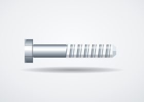
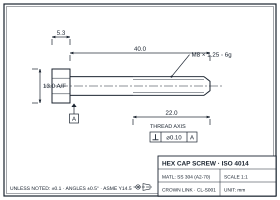

Stainless Steel Screw
Hex head cap screws cold-forged in 304, 316, or 316L stainless steel with rolled threads per ASME B18.2.1 or DIN 933/931. Specified for food processing, marine, and outdoor structural applications where corrosion resistance is non-negotiable.
Request Quote